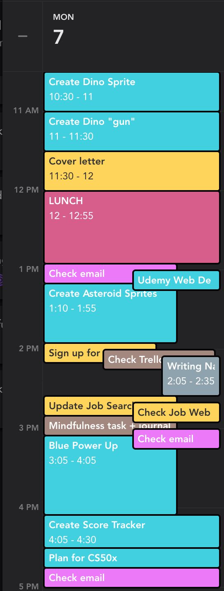

First project: Dinos in Space
This first project is feeling like a lot. I really want to be able to incorporate everything I have planned. Assuming that I'm not limited by the capabilities of scratch. I believe I'll be able to hit all my pie in the sky features though. I think they're probably pretty simple, but they don't feel that way currently. We'll see where the day takes us.
